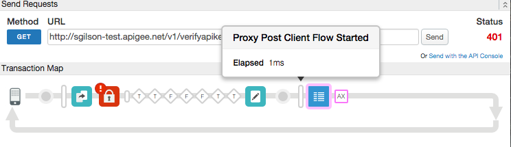

One of the best ways to track down problems in the API runtime environment is to log messages. You can attach and configure a Message Logging policy on your API to log custom messages to a local disk (Edge for Private Cloud only) or to syslog.
File logging is supported only in Apigee Edge for Private Cloud deployments. It's not available in Edge cloud. However, Syslog is available in both Edge Cloud and Edge for Private Cloud.
This policy can be attached in the following locations.
| ProxyEndpoint | TargetEndpoint | |||||||||
| PreFlow | Flow | PostFlow | PreFlow | Flow | PostFlow | |||||
| Request | → | • | • | • | • | • | • | |||
| • | • | • | • | • | • | • | ← | Response | ||
| PostClientFlow | PostFlow | Flow | PreFlow | PostFlow | Flow | PreFlow | ||||
Video: Check out this short video on using the Message Logging policy from the Four Minute Video For Developers (4MV4D) series.
<MessageLogging name="LogToSyslog">
<Syslog>
<Message>[3f509b58 tag="{organization.name}.{apiproxy.name}.{environment.name}"] Weather request for WOEID {request.queryparam.w}.</Message>
<Host>logs-01.loggly.com</Host>
<Port>514</Port>
<Protocol>TCP</Protocol>
<FormatMessage>true</FormatMessage>
</Syslog>
<logLevel>ALERT</logLevel>
</MessageLogging>
A common usage of the MessageLogging policy type is to log to a syslog account. When configured for syslog, an API proxy will forward log messages from Apigee Edge to a remote syslog server. You must already have a syslog server available. If not, public log management services, such a Splunk, Sumo Logic, and Loggly, are available. see Configuring third-party log management services.
For example, imagine that you need to log information about each request message that your API receives from consumer apps. The value 3f509b58 represents a key value specific to the loggly service. If you have a loggly account, substitute your loggly key. The log message that is generated will be populated with four values: the organization, API proxy, and environment name associated with the transaction, along with the value for a query parameter on the request message.
Host and Port elements cannot refer to variables. They must contain static values.
If you have an Edge for Private Cloud deployment, you can also write log messages to a file.
<MessageLogging name="LogToSyslog">
<Syslog>
<Message>[3f509b58 tag="{organization.name}.{apiproxy.name}.{environment.name}"] Weather request for WOEID {request.queryparam.w}.</Message>
<Host>logs-01.loggly.com</Host>
<Port>6514</Port>
<Protocol>TCP</Protocol>
<FormatMessage>true</FormatMessage>
<SSLInfo>
<Enabled>true</Enabled>
</SSLInfo>
</Syslog>
<logLevel>WARN</logLevel>
</MessageLogging>
You can send messages to third-party message logging providers over TLS/SSL by adding the <SSLInfo> block.
<MessageLogging name="LogPolicy">
<File>
<Message>This is a test message. Message id : {request.header.messageId}</Message>
<FileName>test.log</FileName>
<FileRotationOptions rotateFileOnStartup="true">
<FileRotationType>SIZE</FileRotationType>
<MaxFileSizeInMB>10</MaxFileSizeInMB>
<MaxFilesToRetain>10</MaxFilesToRetain>
</FileRotationOptions>
</File>
<logLevel>ERROR</logLevel>
</MessageLogging>
File rotation based on file size.
<MessageLogging name="LogPolicy">
<File>
<Message>This is a test message. Message id : {request.header.messageId}</Message>
<FileName>test.log</FileName>
<FileRotationOptions rotateFileOnStartup="true">
<FileRotationType>TIME</FileRotationType>
<RotationFrequency unit="minute">10</RotationFrequency>
<MaxFilesToRetain>10</MaxFilesToRetain>
</FileRotationOptions>
</File>
<logLevel>ERROR</logLevel>
</MessageLogging>
File rotation based on time.
<MessageLogging name="LogPolicy">
<File>
<Message>This is a test message. Message id : {request.header.messageId}</Message>
<FileName>test.log</FileName>
<FileRotationOptions rotateFileOnStartup="true">
<FileRotationType>TIME_SIZE</FileRotationType>
<MaxFileSizeInMB>10</MaxFileSizeInMB>
<MaxFilesToRetain>10</MaxFilesToRetain>
<RotationFrequency unit="minute">10</RotationFrequency>
</FileRotationOptions>
</File>
<logLevel>ERROR</logLevel>
</MessageLogging>
File rotation based on time and size.
<MessageLogging name="LogPolicy"> <File> .... .... </File> <BufferMessage>true</BufferMessage> </MessageLogging>
Stream-enabled message logging
If HTTP streaming is enabled in an API proxy, neither request nor response messages will be buffered by processing pipeline. When you need to log parsed message content, set BufferMessage to true.
Use the following elements to configure the MessageLogging policy type.
The name attribute for this policy is restricted to these characters: A-Z0-9._\-$ %. However, the Management UI enforces additional restrictions, such as automatically removing characters that are not alphanumeric.
| Field Name | Field Description | |
|---|---|---|
|
Local file destination. (File logging is only supported in Edge for Private Cloud deployments.) For information on where files are stored, see Log file location in Edge for Private Cloud.
|
Message |
Build the message to be sent to the log file, combining text with variables to capture the information you want. See the Samples. |
FileName |
Name of the log file where the message is logged. | |
FileRotationOptions |
||
rotateFileOnStartup |
Attribute. Valid values: If set to true, then the log file is rotated every time the messaging engine restarts. |
|
FileRotationType |
Specifies the rotation policy (size or time) of a log file. |
|
MaxFileSizeInMB |
(On selecting size as rotation type) Specifies the size of a log file that triggers the server to move log messages to a separate file. After the log file reaches the specified size, the server renames the current log file. |
|
RotationFrequency |
(On selecting time as rotation type) Specifies the time in minutes that triggers the server to move log messages to a separate file. After the specified interval elapses, the current log file is renamed. |
|
MaxFilesToRetain |
Specifies the maximum number of files to be retained in the context of your rotation settings. If you specify zero (0), log files are retained indefinitely, but subject to your file rotation settings, though none of the files are deleted or renamed. Therefore, to avoid future disk-full errors, set this to a value greater than zero, or implement a regular, automated system of purging or archiving older retained log files. |
|
BufferMessage |
If HTTP streaming is enabled for your proxy, request/response messages are not buffered. If you want to log content that requires the flow message to be parsed, then set BufferMessage to true. See the "Stream-enabled" sample tab for an example. Default: false |
|
|
To send syslog to Splunk, Sumo Logic, or Loggly, see Configuring third-party log management services. |
Message |
Build the message to be sent to the syslog, combining text with variables to capture the information you want. See the Samples. Note: Response variables will not be available in PostClientFlow following an Error Flow. Use message variables to log response information for both error and success situations. See also Usage notes. |
Host |
The hostname or IP address of the server where the syslog should be sent. If you don't include this element, the default is localhost. | |
Port |
Port where the syslog is running. If you don't include this element, the default is 514. | |
Protocol |
TCP or UDP (default). While UDP is more performant, the TCP protocol guarantees message log delivery to the syslog server. For sending syslog messages over TLS/SSL, only TCP is supported. | |
FormatMessage |
Optional, but This element lets you control the format of Apigee-generated content prepended to the message. If set to true, the syslog message is prepended by a fixed number of characters, which lets you filter out that information from messages. Here's an example for the fixed format:
The Apigee-generated information includes:
|
|
SSLInfo |
Lets you log messages through SSL/TLS. Use with sub-element If you don't include this element or leave it empty, the default value is false (no TLS/SSL).
<SSLInfo>
<Enabled>true</Enabled>
</SSLInfo>
You can configure SSLInfo the same as you can on a TargetEndpoint, as described in http://docs.apigee.com/node/8407. Only the TCP protocol is supported. TLS/SSL on the syslog server must be configured with a valid CA certificate. Self-signed certificates are not currently supported. |
|
logLevel |
Optional. Valid values: Set a specific level of information to be included in the message log. If you're using the |
|
See our GitHub repository samples for the most recent schemas.
When attaching a Message Logging policy to an API proxy flow, consider placing it in the ProxyEndpoint response, in a special flow called PostClientFlow. The PostClientFlow executes after the response is sent to the requesting client, which ensures that all metrics are available for logging. For details on using PostClientFlow, see http://docs.apigee.com/node/8407.
It's important to note that the response flow variable is not available in the PostClientFlow once processing enters the error state. Instead, you can use the message variable to set values in the MessageLogging policy in the PostClientFlow, ensuring that they will be set whether or not the error state was the previous context. For more information and examples, see "Uses for message variables".
The PostClientFlow is special in two ways:
Because it is executed regardless of whether the proxy succeeded or failed, you can put Message Logging policies in the PostClientFlow and be guaranteed that they always execute.
The following Trace image shows a Message Logging policy executing as part of the PostClientFlow, after the DefaultFaultRule executes:

In this example, the Verify API Key policy caused the fault because of an invalid key.
Shown below is the ProxyEndpoint definition that includes the PostClientFlow:
<ProxyEndpoint name="default">
...
<PostClientFlow>
<Response>
<Step>
<Name>Message-Logging-1</Name>
</Step>
</Response>
</PostClientFlow>
...
</ProxyEndpoint>
Edge logs messages as simple text, and you can configure logging to include variables, such as the date and time when the request or response was received, the user identity on the request, the source IP address from which the request was sent, and so on. Edge logs message asynchronously, meaning that no latency that might be caused by blocking callouts is introduced to your API.
The Message Logging policy writes logged messages in memory to a buffer. The message logger reads messages from the buffer and then writes to the destination that you configure. Each destination has its own buffer.
Proxy calls succeed when logging fails
Because message logging is first written to buffer, the API proxy will continue successful execution even if message logging ultimately fails (for example, if there's a connection failure to the external syslog provider).
If the write rate to the buffer increases beyond the read rate, the buffer overflows and logging will fail. If this happens, you might find a message containing the following in the log file:
Log message size exceeded. Increase the max message size setting
If you encounter this issue in an Edge for Private Cloud deployment, locate the message-logging.properties and use this solution:
Increase the max.log.message.size.in.kb property (default value = 128 KB) in the message-logging.properties file.
Note: The response message variables in Edge are not available from the Error Flow. These variables are also not available in PostClientFlow if the preceding flow was the Error Flow. If you want to log response information from the PostClientFlow, use the message object. You can use this object to get at headers and other information from the response whether or not there was an error. See Message variables for more information and an example.
By default, message logs are located in the following location on message processors:
/opt/apigee/var/log/apigee/message-processor/messagelog/
{org}/{environment}/{api_proxy_name}/{revision}/{logging_policy_name}/
You can change the default log location by modifying the following properties in the message-logging.properties file on the message processors:
data.dir - Sets the root path for log file storage. For example, data.dir=/opt/apigee/var/loglog.root.dir - If you set this to a relative path, such as log.root.dir=custom/folder/, the path is appended to the data.dir location./opt/apigee/var/log/custom/folder/messagelog/ (note that /messagelog is added automatically).log.root.dir=/opt/apigee/var/log/messages, message logs will be stored in /opt/apigee/var/log/messages/messagelog/. An absolute path in log.root.dir takes precedence over data.dir.If you want to store log files in a flat file structure so that all log files are put in the same directory, set the enable.flat.directory.structure property to true in the message-logging.properties file on message processors. Messages are stored in the directory specified by the properties above, and the file names take the form of {org}_{environment}_{api_proxy_name}_{revision}_{logging_policy_name}_{filename}.
Default values can be specified for each variable in message template separately. For example, if the variable request.header.id cannot be resolved, then its value is replaced with the value unknown.
<Message>This is a test message. id = {request.header.id:unknown}</Message>
A common default value can be specified for all the unresolved variables by setting the defaultVariableValue attribute on the the Message element:
<Message defaultVariableValue="unknown">This is a test message. id = {request.header.id}</Message>
The default variable value cannot contain spaces.
The Message Logging policy lets you send syslog messages to third-party log management services, such as Splunk, Sumo Logic, and Loggly. If you want to send syslog to one of those services, see that service's documentation to configure the service's host, port, and protocol, then set the Syslog element on this policy accordingly.
See the following documentation for third-party log management configuration:
<FormatMessage>true</FormatMessage> is required in the policy as a child of the <Syslog> element.The following variables are populated on policy failure.
messagelogging.failedmessagelogging.{stepdefinition-name}.failedProxy calls succeed when logging fails
There's a difference between policy errors and message logging errors. The flow variables here are populated only when the policy itself fails, not when message logging fails. Because message logging is first written to buffer, the API proxy will continue successful execution even if message logging ultimately fails (for example, if there's a connection failure to the external syslog provider). Be sure to check your logs on a regular basis to make sure logging is happening as expected.